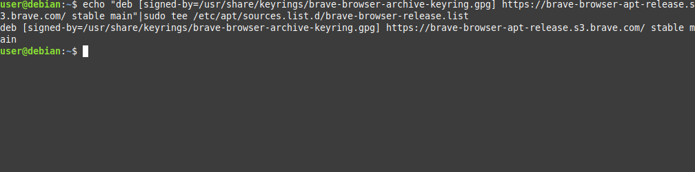

you need a degree in Computer-Science to install apps on Linux>
-------------------------------------------------------------------------------------------------------
i'm tired of this rhetoric that Linux is impossible to use, and i'm also tired of nerds gatekeeping knowledge from people that are trying to learn.
being a Linux daily driver for many years now, i'd like to give you a No-BS tutorial on how to easily install programs and update your system from the command line interface.
i'd like to also give a warning: if you're not a nerd then this likely won't matter to you. i encourage everyone to read and see how simple it can really be, but i can't say you'll use it if you dont care at all about how computers work.
this tutorial assumes you're on a debian-like distribution (meaning you're using the apt package manager)
if you open a terminal, you'll be greeted with something like this.
the format is User@NameOfComputer. the name of my User is user and the Name Of the Computer i'm using is debian.
this is the Command Line, where you'll type commands if you want to communicate with your computer.
apt -h
"apt" is your package manager, "-h" is a paramater to the command called that passes the "h" flag (which is standard for bringing up a help menu). all of this jargon means typing any command and "-h" after will usually bring up some help.
Alright, that's 60% of using Linux right there. Figuring out how to get help, then reading through what's documented to help yourself. If this doesn't sound interesting, this may not be for you, and that's ok!
moving on..
to update your system, you'll want to run apt update to fetch what packages to download, and apt upgrade to install the packages.
oh no, first problem! due to permissions (a whole seperate introduction lol), your user has been denied access to run apt upgrade! you have to be root, or super user to run this command.
once you prepend sudo to your command, you'll get an output like this. this means it searched for updates to programs you have installed on your system, 165 programs on mine can be updated right now.
usually i don't care how many have to be installed and just do the download + install in one command. this makes it very simple to update my entire computer, just by entering one command.
sudo apt update -y && sudo apt upgrade -y
the "&&" allows you to chain multiple commands together. in that one line, i ran apt update followed by apt upgrade as super user, using "-y" to skip the need for me to confirm i want the changes.
the first thing i usually install is a web browser, so i'll show you how to install brave.
when trying to install something, i usually search for the software followed by "install"
if the software isn't niche, it will be at the top of search results and will have a url that isn't phishing. i see brave.com, i enter.
first link sends me here, this page has install instructions for many families of Linux Distributions. Good thing we're using the most popular and supported,
Debian/Ubuntu/Mint.
from here its straightforward, the developers of the software we want (thanks, Brave Team) gave us a command chain to enter that will do all of the installing for us. all WE have to do is enter them into our CLI.
some will give feedback, some will not. do not panic. just enter the commands as you're told and you will usually be correct.
and just like that, after entering the commands we were given in the same order, brave is ready to be installed.
Boom.
You've installed your first Linux "app" using the command-line only. Congrats.
your new software should now be in your shell $PATH. what i usually do now, is start typing out how the software is spelled, and letting [TAB] autocomplete finish the command for me.
i am not smart or cool for knowing this stuff, i'm just a Real Nerd. i've spend thousands of hours behind a computer. we (humanity) have a problem where we don't want to share information, because we think it'll encroach on our Coolness or Opportunity of some sort.
i think this is ridiculous.
the more i grow up, the more i realize that in every domain ever there were gatekeepers that wanted to be the cool guys.